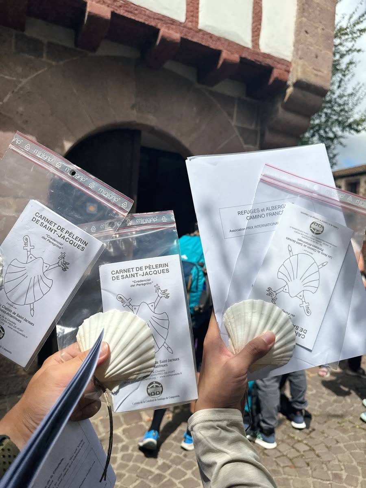
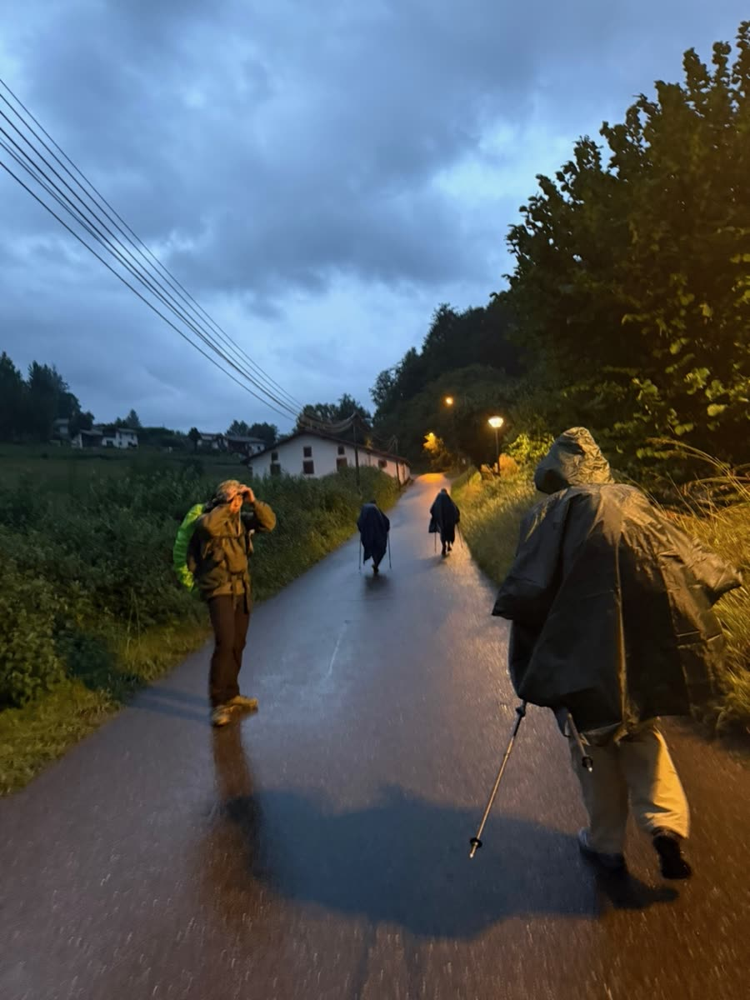
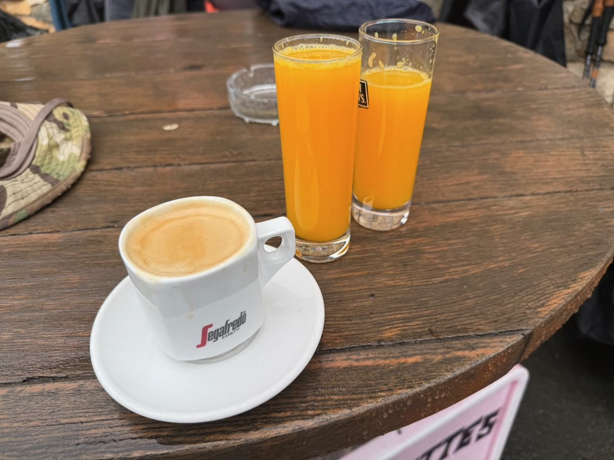
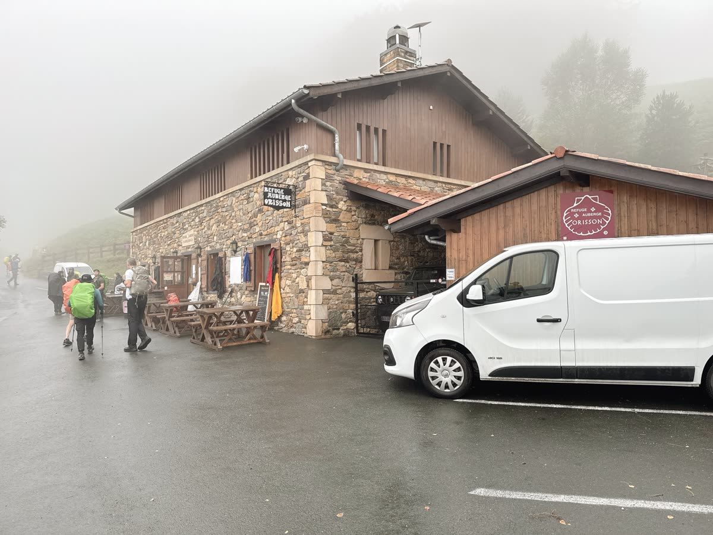
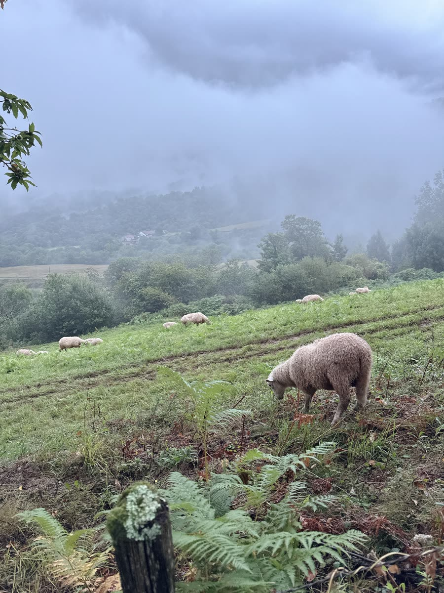
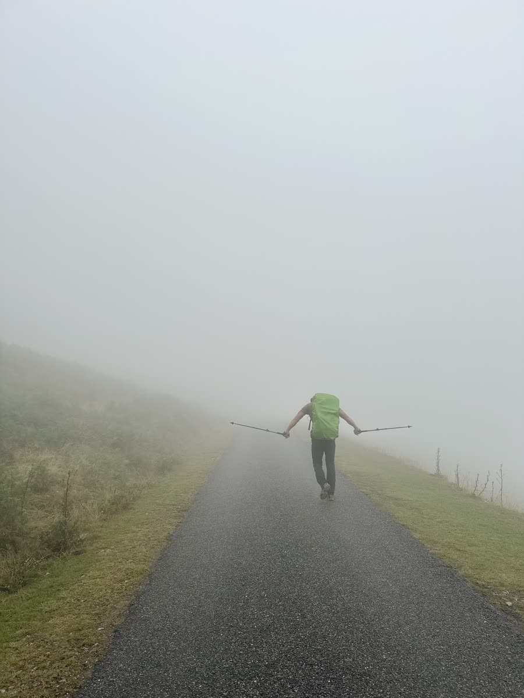
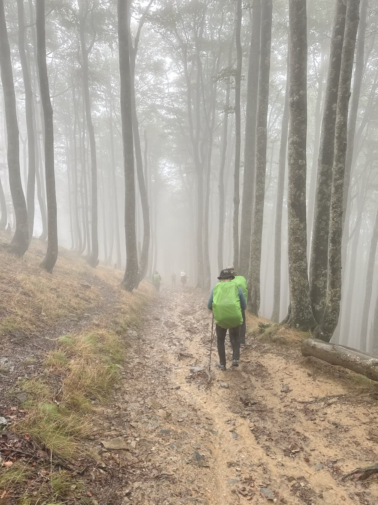

순례자의 한끼한밤
순례자의 한끼한밤순례길 첫날,
앞이 하나도 안 보였다.
그래도 발은 앞으로 갔다.
파리에서 기차를 타고 바욘에 내려서, 다시 작은 기차로 갈아타고 프랑스 국경 마을 생장피에드포르에 도착했다. 순례자 사무소에 줄을 서서 순례자 여권을 받고, 가방에 매달 가리비 껍데기도 하나 골랐다. 이제 진짜 시작이구나 싶었다.

다음 날 아침 6시쯤 출발했다. 프랑스길 첫날은 대부분 피레네 산맥을 한 번에 넘는다. 생장에서 스페인 론세스바예스까지 25km 남짓, 해발 1,400m가 넘는 고개까지 올라갔다가 내려오는 길이다. 순례길 전체에서 제일 힘든 날로 자주 꼽히는 구간인데, 하필 그걸 첫날에 한다.
문을 나서자마자 비가 왔다. 아직 깜깜한 골목에서 다들 우비를 뒤집어쓰고 헤드랜턴을 켰다. 처음 보는 사람들인데 다 같은 모양이었다. 판초 우의를 입은 등은 다 거북이 같았다.

오르막은 생각보다 금방 시작됐다. 중간에 오리손이라는 산장이 하나 있는데, 거기까지만 가도 다리가 벌써 무거웠다. 비에 젖은 돌벽 산장에 들어가 커피 한 잔과 오렌지주스로 잠깐 숨을 돌렸다. 아직 갈 길이 한참이라, 그 한 잔이 그렇게 달았다. 그리고 또 올라갔다.



위로 올라갈수록 안개가 짙어졌다. 나중엔 정말 앞이 아예 안 보였다. 바로 앞사람의 형광색 배낭 커버만 희미하게 보였다가 사라졌다가 했다. 바람은 또 어찌나 세게 부는지, 몸이 옆으로 밀릴 정도였다. 원래 이 길은 구름 아래로 산맥이 쫙 펼쳐지는 풍경이 유명하다는데, 우리가 본 건 하얀 벽이었다.
그 와중에 안개 속 산길 옆에 양들은 아무렇지 않게 풀을 뜯고 있었다. 2편의 아헤스 고양이도 그렇고, 순례길 동물들은 다 태평하다.

그렇게 한참 오르는데 안개 속에 갑자기 트럭 한 대가 나타났다. 고개 가까이에서 순례자들한테 바나나랑 음료를 파는 푸드트럭이었다. 비바람 맞으며 올라온 사람한테 그건 그냥 트럭이 아니라 오아시스다. 같이 간 동생이 바나나 하나 들고 세상 다 가진 얼굴로 웃던 게 아직도 생각난다. 순례길 첫날부터 알게 됐다. 이 길에서는 먹을 거 하나에 사람이 이렇게까지 웃는다.
고개를 넘고 나서는 내리막이 이어졌다. 안개 낀 너도밤나무 숲길은 비에 젖어 미끄러웠고, 오르막보다 무릎이 더 힘들었다. 그래도 숲은 이상하게 조용하고 예뻤다. 사진으로 다시 보니 동화 속 숲 같다. 그때는 그런 생각할 여유가 하나도 없었지만.

론세스바예스에 도착한 건 오후 3~4시쯤이었다. 열 시간 가까이 걸은 셈이다. 신발은 다 젖었고, 다리는 내 다리가 아닌 것 같았다. 그래도 걸어서 산맥 하나를 넘어, 프랑스에서 스페인으로 넘어왔다.
나중에 스물사흘째 폰세바돈 산을 오를 때 다시 비바람을 만났는데, 그날 일기에 피레네를 넘던 첫날이 떠올랐다고 적었다. 그만큼 이날이 몸에 새겨져 있었나 보다. 지금 생각해 보면, 첫날에 제일 험한 길을 먼저 넘은 덕분에 남은 31일이 조금은 덜 무서웠던 것 같다. 그게 피레네가 준 선물이었다.
For pilgrims passing by
Day one of the Camino Francés: Saint-Jean-Pied-de-Port to Roncesvalles, about 25 km over the Pyrenees, climbing past 1,400 m. We left around 6 a.m. in the rain. Higher up, the fog was so thick I could only see the glowing backpack cover of the person in front of me, and the wind pushed us sideways. A food truck appeared out of the fog near the top, and a banana had never tasted so good. We reached Roncesvalles around 3 or 4 p.m., soaked, and had walked from France into Spain. Starting with the hardest day made the other 31 feel a little less scary.
순례길 32일 연재
- 1편 · 오늘 저녁은 뭘 먹지?
- 2편 · 오늘은 어디서 자지?
- 3편 · 피레네를 하루 만에 넘은 날 (지금 읽는 글)
- 4편 · 밀밭에 20분 누워 있던 날
- 5편 · 산티아고에 도착한 아침
- 6편 · 순례길 준비는 이렇게 했다
🕯️ 오늘 밤 이야기는 여기까지.
다음 편은 며칠 동안 같은 밀밭만 걸었던 메세타 이야기입니다.